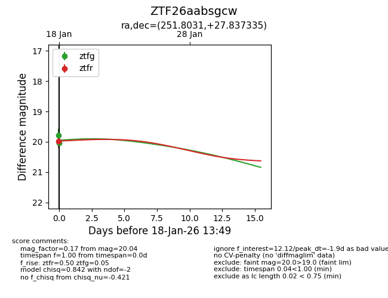
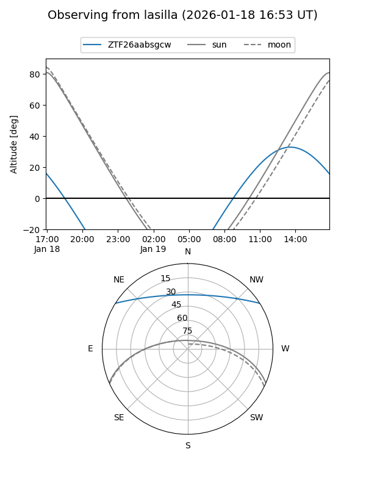
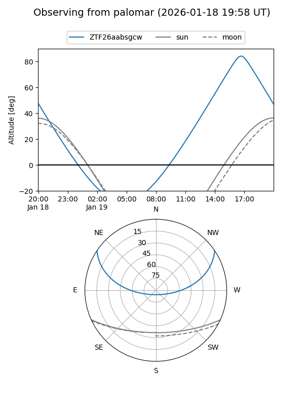

ZTF26aabsgcw
Target ZTF26aabsgcw at 2026-01-18 13:50
Aliases and brokers:
FINK: link
Lasair: link
ALeRCE: link
alt names
ZTF26aabsgcw (ztf,fink_ztf)
Coordinates:
equatorial (ra, dec) = 251.8031,+27.83734
equatorial (HMS+DMS) = 16:47:12.75,+27:50:14.41
galactic (l, b) = (48.2562,+38.23759)
Flags:
Photometry:
last ztfg=20.04, ztfr=19.97
2 ztfg, 1 ztfr detections
Lightcurve

Visibility


Additional plots